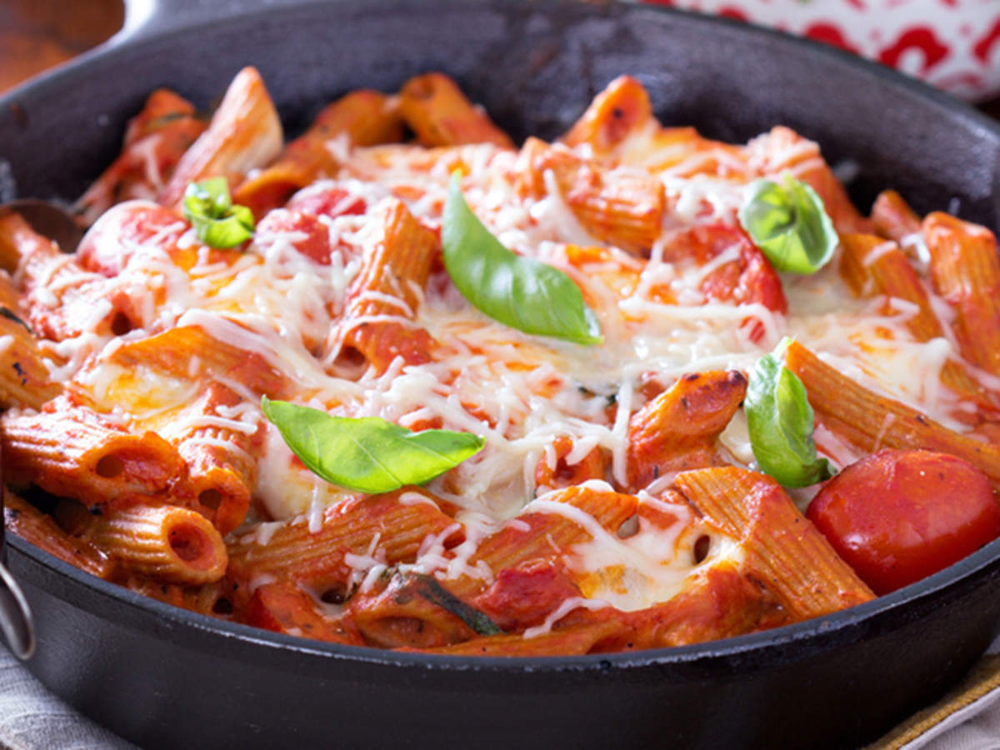

The ultimate pasta recipie By Chaitanya Vaswani

The steps to make it are as the following
Boil the pasta by Taking a small bowl and mixing salt, black pepper powder, red chilli sauce and tomato sauce. On the other hand, take a pan and start heating the oil on low flame.
Stir fry the veggies by Adding sliced onions on the pan and sauteed them till they turn slightly brown in colour.
Add flour in the pan and keep stirring, then add milk, cheese and allow it boil. Once the cheese is ready. transfer it to a bowl. Add water to the pan to prevent the mixture from thickening. Put the mixture for boiling.
Add boiled pasta to the pan and let it cook for on low flame for a few minutes. Also, add sugar, tomato ketchup, lemon juice and cheese to the mix.
Now, pour this mixture from the pan to the baking dish and bake it for about 15 minutes. Garnish it with chopped green chillies or grated cheese. Serve warm.